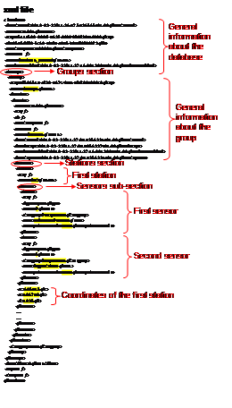

14 Database formats
This document contains the User and Technical Manuals of the RS MINERVE software. These manuals are constantly updated. This version corresponds to the Software version 2.9.1.
The different input data as well as exported results are managed within a database. The Database Viewer, accessible from the RS MINERVE window, is used to create or edit the database linked to the active model.
14.1 The Database Viewer
The Database Viewer window appears when a database is created ( Add) or opened for edition ( Open).
The database structure, presented in Table 14.1, is organized in five hierarchical levels:
Database
Description of the database
Contains one or more groups
Group
- Separation based on category of data (Measures, Forecasts, Simulations,…)1
Contains one or more datasets
Dataset
Set of data of common type (Meteo data, Flow data,…)
Contains one or more stations
Station
Information about the station (name and coordinates)
Contains one or more sensors
Sensor
Description of the sensor (name, units and data)
Contains one data series
The user can create a complete database or different datasets to add to an existing database.
| Node | Name | Description | Example |
|---|---|---|---|
| Database | |||
| Description | Name of the database | Database_tutorial | |
| Date creation | Date of creation of database | 14.12.2012 13:32 | |
| Date modification | Date of last modification | 04.01.2013 14:30 | |
| Time zone | Time scale of the data | UTC+01:00 | |
| Filename | File name and path | (Full path of file) | |
| XML file | XML file size | 21 Ko | |
| Data file | Data file size | 161 Ko | |
| Group | |||
| Description | Name of the group | Measure | |
| Category | Type of data (Inputs, Outputs or None) | Inputs | |
| Date capture | Date of last dataset capture date in the group | 18/12/2012 10:54 | |
| Dataset | |||
| Description | Name of the dataset | Meteo_data | |
| Dataset creation | Dataset creation date | 14.12.2012 00:00 | |
| Dataset reception | Date of receipt of data | 14.12.2012 03:00 | |
| Data modification | Date of last modification | 14.12.2012 03:00 | |
| Data capture | First date of the data (editable) | 14.12.2012 00:00 | |
| Time zone | Time scale of the data | UTC+01:00 | |
| Filename | File name and path | (Full path of file) | |
| XML file | XML file size | 21 Ko | |
| Data file | Data file size | 161 Ko | |
| Station | |||
| Name | Name of the station | Station_meteo_1 | |
| X | Coordinate X in meter | 650000 | |
| Y | Coordinate Y in meter | 130000 | |
| Z | Altitude in meter above sea level | 1957 | |
| Sensor | |||
| Description | Name of the variable | Precipitation | |
| Category | Variable type | Precipitation | |
| Unit | Variable unit | MillimetersPerHour | |
| Interpolation 2 | Data assimilation method | Linear | |
| Initial date | The first date of the time series | 01/01/2011 00:00:00 | |
| Final date | The last date of the time series | 31/12/2013 00:00:00 | |
| Min value | Minimum value of the series | 0 m3/s | |
| Average value | Average value of the series | 1.1884 m3/s | |
| Max value | Maximum value of the series | 3.2485 m3/s |
14.2 Database, dataset and CSV formats
Databases and datasets also correspond to different saving formats:
Database files ([.dbt and .dbx] in text format or [.dbb and .dbx] in binary format) can be created, opened, imported, exported or saved from the complete database (database level).
Dataset files ([.dst and .dsx] in text format or [.dsb and .dsx] in binary format) can also be created, opened, imported, exported or saved from the Database (dataset level).
CSV files ([.csv] in text format) can also be created, opened, imported or exported from the Database (dataset level).
Database files
The database file includes two different files:
A XML file (*.dbx) describing the structure of the database (groups, datasets, stations and sensors)
A file containing the data series. This file can be in text format (*.dbt) or binary format (*.dbb). Binary format allows to reduce the file size.
Note that in the text file (*.dbt), if the database is not empty and contains one or more sensors (then at least a dataset with at least a station)3, each data series should be composed of:
A header containing four fields separated by a backslash character: Group\Dataset\Station\Sensor. Each field name must be identical to the name found in the corresponding <Name> node in the XML file (*.dbx) (Figure 14.1).
Two columns (date and data) separated by a tabulation character.
An example of the XML file and of the text file is showed respectively in Figure 14.2 and Figure 14.3.

Dataset files
The dataset file includes also two different files (Figure 14.5 and Figure 14.6):
A XML file (*.dsx) describing the structure of the dataset (stations and sensors)
A file containing the data series. This file can be in text (*.dst) or in binary (*.dsb) format. This last format allows to reduce the file size.
Note that in the text file (*.dst), if the dataset is not empty and contains one or more sensors (then at least a dataset with at least a station)4, each data series should be composed of:
A header containing two fields separated by a backslash character: Station\Sensor. Each field name must be identical to the name found in the corresponding <Name> node in the XML file (*.dsx) (Figure 14.5).
Then two columns (date and data) separated by a tabulation character.
An example of the XML and text files is showed respectively in Figure 14.5 and Figure 14.6.
CSV files
CSV files can be used to import and export Dataset files. It is possible to open a CSV file and RS MINERVE will create a Database required to contain the Dataset. The structure of the CSV files is showed in Figure 14.7.
RS MINERVE will automatically remove ‘NA’, ‘NaN’, ‘N/A’ or ‘NULL’ values contained in the time series before creating the dataset.
And Figure 14.8 shows an example of CSV file.
14.3 Automatic creation of databases or datasets
An automatic creation of a database or a dataset is possible. Concerning the text file (respectively *.dbt, *.dst or *.csv), it can be easily created based on information provided in Section 14.2. Regarding the .xml file (*.dbx or *.dsx) or plain file (*.csv), additional information for the automatic creation is presented hereafter.
?tbl-database_nodes_xml_file and ?tbl-dataset_nodes_xml_file describe all the possible nodes respectively represented in a database (*.dbx) and a dataset XML file (*.dsx). The presented tables takes into account an example with a dataset “Measure” with a station “Aigle” and a sensor of observed precipitation “P”. The information visible in Database is also presented in last three columns.
To create an XML file, all the possible nodes are very useful but not all required, since some of them are also necessary for operational hydro-meteorological systems.
“Key” node generally allows distinguishing different databases (or datasets) with different name and structure. “ID” node is only useful for operational system, since it can be used when datasets with same “Key” (as well as same filename and structure) are overwritten at each new forecast. Then, “ID” node allows to Database knowing if the dataset has been updated or not.
Definition and use of Groups and Datasets can also be done in a different way by the user.↩︎
Data can be interpolated in three different ways: linear, constant before and constant after. With constant before, the value for a given time is used as a constant for the preceding time interval, whereas the constant after method applies the value for the following time interval.↩︎
If the database is not containing sensor, the data file (*.dbt or *.dbb) will be empty.↩︎
If the dataset is not containing sensor, the data file (.dst or .dsb) will be empty.↩︎